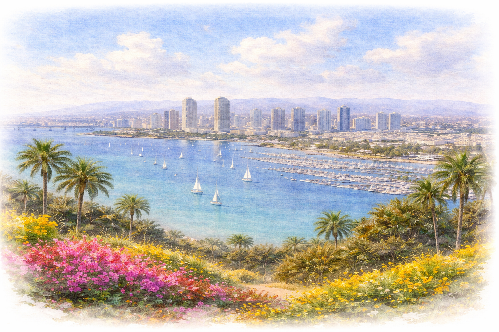

La Valencia Hotel
A classic La Jolla stay right above the cove, with quick access to shops, coffee, and the coastline. Ideal if you want the weekend to feel fully on foot.
View HotelLa Jolla is easy to settle into for a long weekend. These options are a strong starting point for flights, nearby stays, and getting around town.

The wedding events are centered around coastal La Jolla. Staying nearby keeps the weekend walkable, scenic, and low-stress.
A classic La Jolla stay right above the cove, with quick access to shops, coffee, and the coastline. Ideal if you want the weekend to feel fully on foot.
View HotelA quieter resort option with a little more room to unwind. Best if you want spa access, easy rideshares, and a calm home base between events.
View HotelSAN is the easiest airport for the weekend and is about 20 to 25 minutes from La Jolla without heavy traffic. A Friday midday arrival usually makes for the smoothest start.
Airport InfoWe recommend rideshare for the wedding day. Street parking can be tight near the coast, especially around sunset, so leaving the car behind will make things easier.
View Map